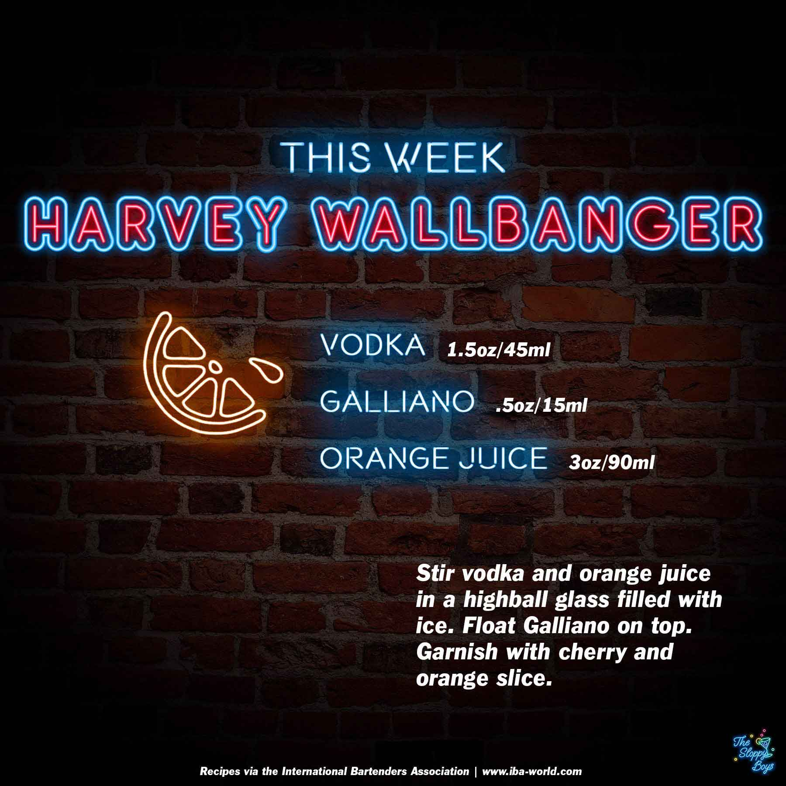

Sloppy Drinks
Podcast
About

Harvey Wallbanger
Ingredients
Vodka (1.5oz/45ml)
Galliano (.5oz/15ml)
Orange Juice (3oz/90ml)
Steps
Stir vodka and orange juice in a highball glass filled with ice.
Float Galliano on top.
Garnish with cherry and orange slice.
Notes
Episode 25 - Harvey Wallbanger (April 9, 2021)
Artwork by The Sloppy Boys